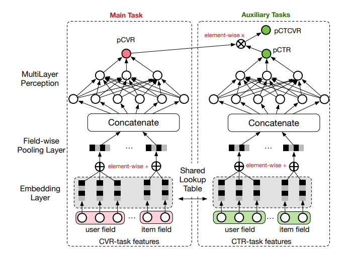

Ma 2018 - Entire Space Multi-Task Model
Ma 2018 tackles the problem of building a post-click Conversion Rate (CVR) prediction model. Note that CVR is the task of predicting conversions from impressions, whilst click-through rate prediction (CTR) is predicting clicks from impressions.
In a typical recommender system, users follow the sequential process of impression -> click -> conversion, where conversion may refer to making a job application, purchase action etc. Usually, CVR models are built the same way as CTR models: a dataset of clicked impressions is prepared, and the converted items are labelled as relevant. A model is trained on this dataset and then used to make conversion predictions on all impressions. This paper argues that there are two problems with this approach:
- Sample Selection Bias (SSB). The distribution of the training set (comprising only of clicked impressions) differs greatly from the distribution of the testing set (comprising all impressions), and this distribution shift will hurt generalization performance of the trained model.
- Data Sparsity (DS). The dataset for CVR (clicked impressions) is typically much less than the dataset for CTR (all impressions), and the lack of data makes model fitting difficult. The paper estimates that CVR dataset is typically
4%of that of CTR dataset.
Setup
Denote the observed dataset to be , with each sample tuple representing one impression drawn from a distribution with domain . is the feature space, and are label spaces (i.e. 0 or 1). Each feature vector captures all the user attributes, item attributes or user-item interaction for the impression event. The notation represents the sequential nature where a click event must precede a conversion event .
We can denote the various prediction tasks as follows:
- Post-view clickthrough:
- Post-click conversion:
- Post-view click + conversion:
The conventional way of modelling pCVR is to construct a sample from only click impressions, i.e. , where clicked but not converted impressions are treated as negative samples. We can see than . As mentioned above, there are problems with this approach.
ESMM Model
The ESMM model breaks down the pCTCVR task into its constituents, and uses two neural networks to model pCTR and pCVR simultaneously. Based on the diagram, it seems to embed each user field and item field into a fixed-size embedding, where the user field embeddings are summed up element-wise to produce an overall user embedding. The same is done to produce an overall item embedding. The user and item embeddings are then concatenated together, and this combined embedding is fed into a dense layer to finally output a real score representing either pCVR or pCTR. The two scores are then multiplied together to form the final prediction of pCTCVR.
Importantly, the projection (or lookup) layer from raw features to embedding is shared between the two neural networks. This allows the pCVR network in particular to benefit from the richer sample data that the pCTR network enjoys and addresses the data sparsity issue.
|  |
|---|
| ESMM Model Architecture (Figure 2 from ESMM Paper) |
Finally, the model is trained with a multi-task objective. Specifically, the losses are computed on the dataset with all impressions. The output pCTR is compared against clicks using a cross-entropy loss, and the output pCTCVR is compared against conversions using a cross-entropy loss. This multi-task loss allows us to exploit the sequential nature of the data generation process, such that only needs to model the delta aspect that leads from a click to a conversion.
The authors show that modelling in this multi-task manner outperforms a setup where two models are trained independently to predict CTR and CVR respectively, and their product is taken to estimate pCTCVR. Unfortunately, we cannot replicate this joint-task learning setup with gradient tree-based models, at least not naively.
Details
The authors set the dimension of each embedding vector to be 18, and each MLP is 360 -> 200 -> 80 -> 2 dimensional. Adam solver is used with .